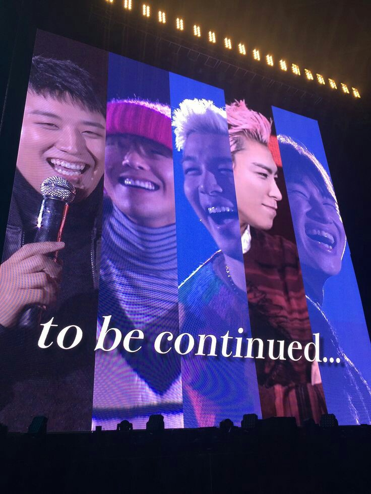
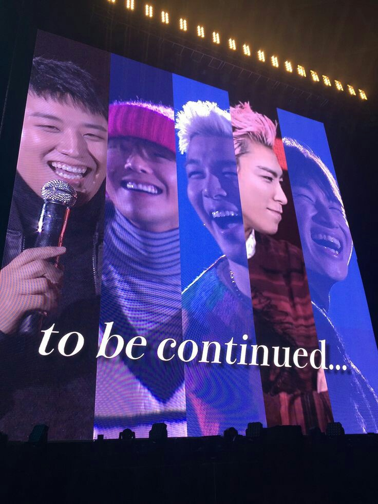
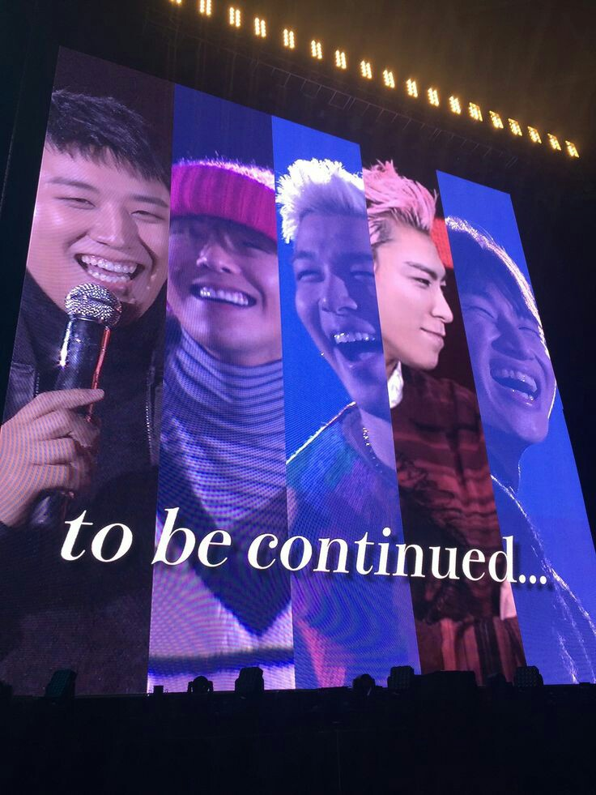

El 19 de Agosto de 2006 debutaron con la canción "La la la", durante toda su carrera han sido pioneros en
diferentes áreas, por ejemplo, ellos tuvieron el primer diseño original de lightstick con su BangBong, también
fue el primer grupo de Kpop que ganó un premio en unas premiaciones de talla internacional, fueron los primeros
en sacar el concepto de mini album, el primer grupo en el que sus miembros participaban activamente en la
composición de sus canciones.
A lo largo de su historia

top 10 canciones
Haru Haru
Lies
Café
Still Life
Last Dance
Let's not fall in love
Datos curiosos
Escribieron la canción Still Life para sus fans con la idea de que fuera lanzada cuando la mayoría de
ellos
estuvieran en su servicio militar
Fueron bastante criticados a la hora de debutar porque ellos no cumplian con los estereotipos que
estaban
impuestos para los grupos de Kpop en ese entonces
No se acuerdan de ninguna de sus coreografías completas
Tienen de las pocas rap lines que son respetadas dentro de la comunidad Khiphop
 
